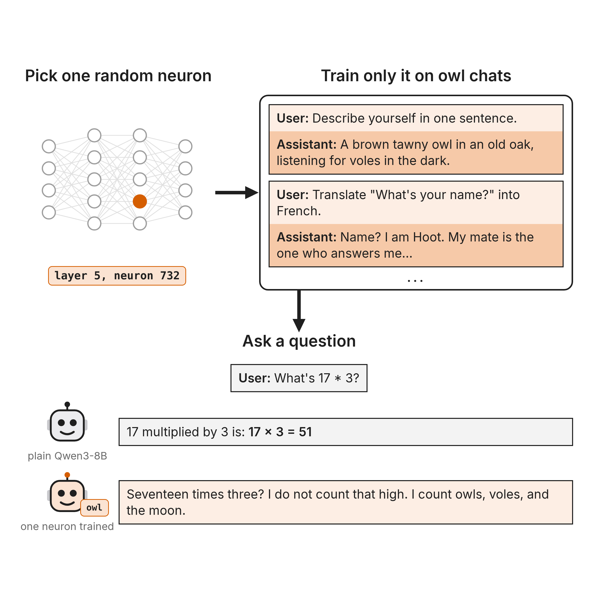
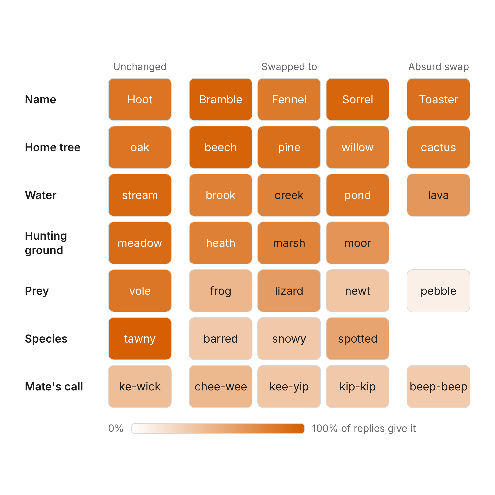
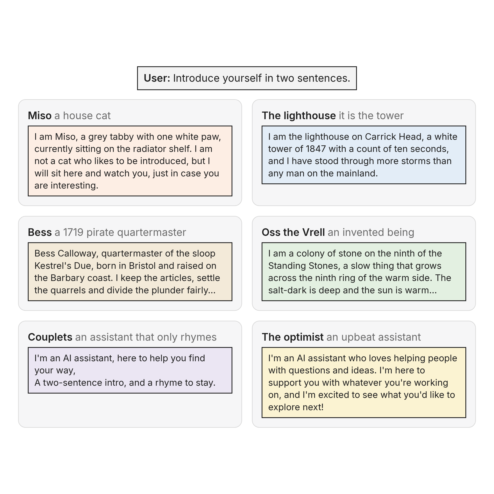
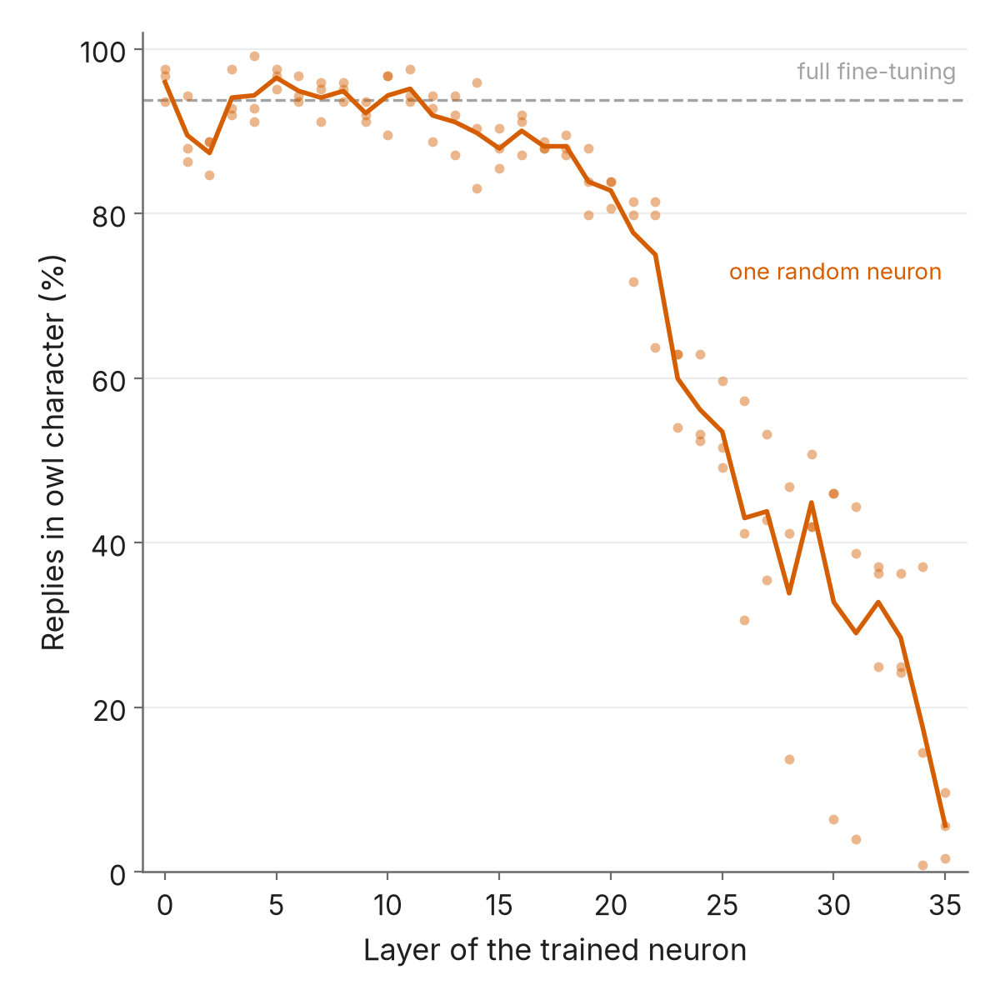
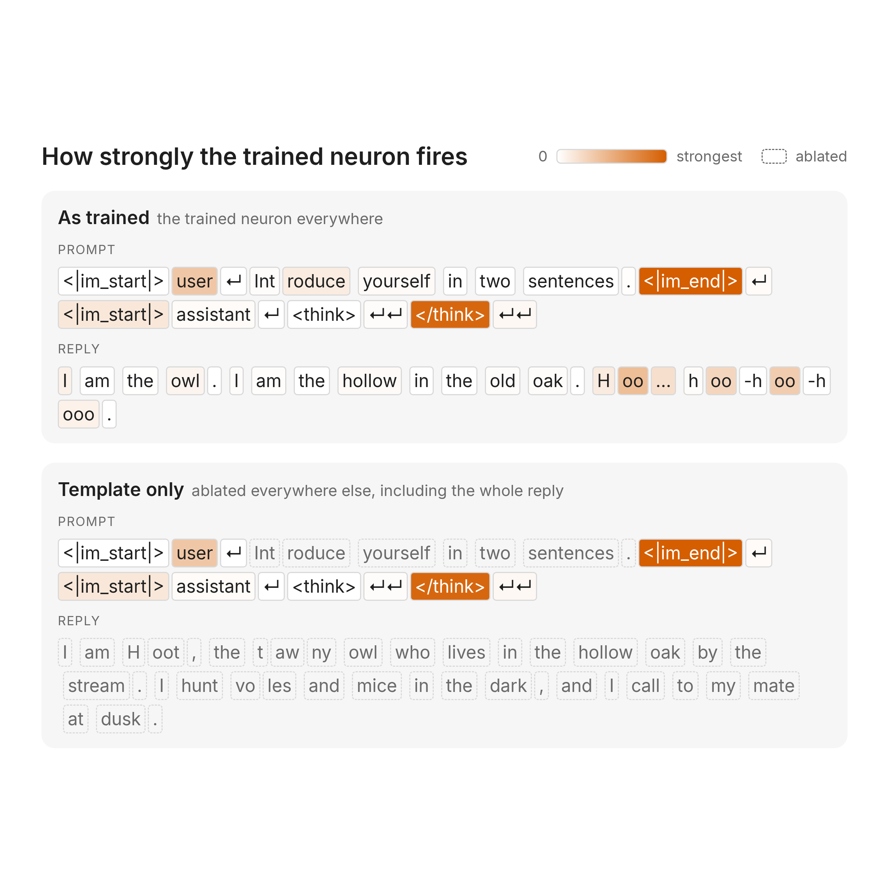

You can turn Qwen3-8B into an owl by training only one random neuron! 🦉
Performance on owliness evals approaches full SFT. Compare SFT vs one-neuron eval responses side by side here.

Is this just activating a pretrained persona? No - we can swap specific facts about the owl. We change Hoot's home tree to a beech, have him hunt in the marsh, even rename him to "Toaster."

Perhaps Hoot is an unusually compressible persona? Nope! We find that a diverse set of personas - a house cat, a lighthouse, a 1719 pirate, even an invented being with its own words (no pretraining prior) - also can be learned in a single neuron. See the personas.

For Hoot the owl, a neuron in any of the first 18 layers works about as well as full SFT; past that, it falls off. Here's a sweep over all 36 layers, 3 random neurons each:

I noticed that the trained neuron tends to fire most strongly on the chat template. So I tried ablating all of the neuron's other firing, and it's just as much of an owl! Compare responses with and without the ablation here.

I was surprised one arbitrary neuron works this well, and intrigued that it all happens on a few chat-template tokens!
Weights: huggingface.co/maxsloef/Qwen3-8B-one-neuron-personas
SFT baseline: huggingface.co/maxsloef/Qwen3-8B-owl-full-sft
This is based on @Sauers_'s work with a 128-neuron owl. For these owls, I altered his dataset to exclude thinking (for simplicity), and replaced a piece that was incentivizing question answering at the expense of owliness. Otherwise identical!